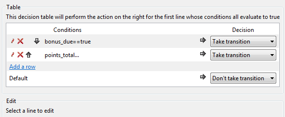

Transitions
Overview
In Bonita Studio, transitions represent sequence flow. Transition arrows are used to connect all objects, allowing the sequence flow to move from the start to the end of a process.
In addition to connecting elements in a process, transitions are used to define the direction of flow between these elements.
If a transition is not present between process elements, the sequence flow will stop. The flow is broken and the process will not reach its termination.
Sequence flow must start and end within a single process. Transitions cannot cross from one pool to another. It is best practice to label the conditions on transitions so they are easily understood in the process diagram.
Some elements, such as tasks and gateways, can have multiple outputs connecting to other elements. These multiple outputs need to be managed to create an order of flow. They can be configured using conditions to determine which path the flow should take, given the state of the process case (e.g. data variables).
To configure a transition, select it in the process diagram and go to the Details panel, General tab. You can configure the following:
- The name and a description of the transition. The name is used to label the transition in the diagram.
- The condition under which this transition is taken. There are three ways to specify this:
Condition expression
Click the crayon icon to open the Expression editor. Select the expression type and enter the expression. The most useful type of expression for a transition is a comparison. A comparison expression uses logical operators on variables, parameters, or constants to determine whether the transition is taken.
Condition decision table
For complex or multi-stage conditions, use a decision table. A decision table is a sequence of conditions, one condition in each row of the table. The rows are evaluated in order. Each condition is a comparison expression.

Default transition
If you make a transition the default, this flow is taken if no other outgoing transition from the element meets the conditions defined in an expression or decision table defined for that transition. We recommend that you always specify a default transition.